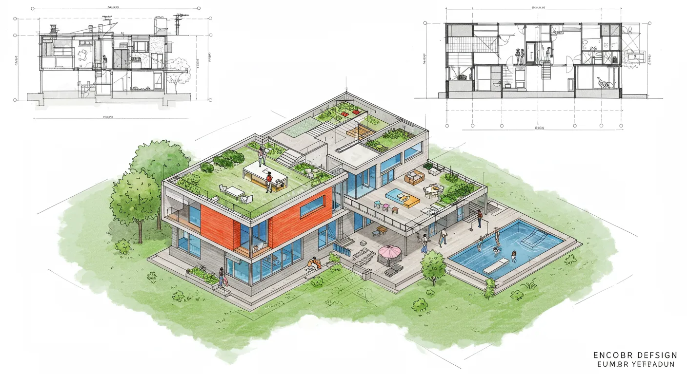
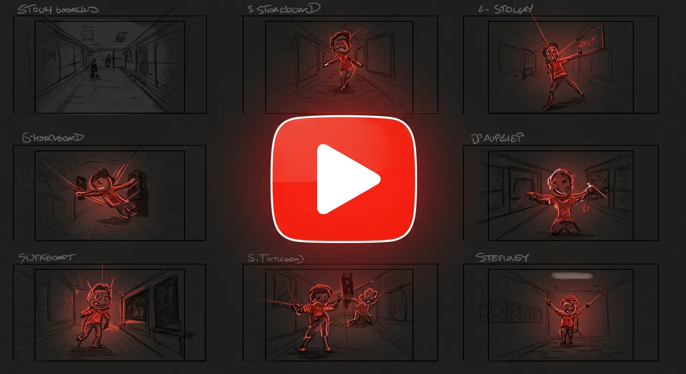

Prompt Collection
AIの可能性を引き出すプロンプト集
高品質なコンテンツを安定して生成するために、私が実際に使用・改良を重ねているプロンプトのコレクションです。思考の過程もご覧いただけます。

AIイラスト生成 (Stable Diffusion)
簡単な日本語から高品質なイラスト用プロンプトを生成させるための、AIへの指示書です。

AIイラスト生成 (ImageFX)
日本語の簡単なイメージから、情景が浮かぶような美しい英文プロンプトを生成する指示書です。
AI楽曲制作 (Suno AI)
テーマを伝えるだけで、作詞と曲のスタイルをAIに提案させるための指示書です。

YouTubeショート動画シナリオ
バズる可能性のある動画台本を、AIと対話しながら段階的に作成するための指示書です。
小説執筆 (プロット・本文)
プロットから本文まで、AIと対話しながら物語を共同制作するための指示書です。
子供向け知育絵本
物語のプロット、本文、そして各シーンのイラスト用プロンプトまでAIと共同制作する指示書です。
ロードマップ作成 Lv.1 (初心者向け)
AIの質問に答えるだけで、簡単なロードマップが作成できる、最も手軽な指示書です。

ロードマップ作成 Lv.2 (バランス型)
手軽さと精度のバランスが良い、戦略コンサルタント風のAIと対話する指示書です。

ロードマップ作成 Lv.3 (上級者向け)
出力形式まで厳密に指定し、本格的な計画書を作成できる、最も高機能な指示書です。